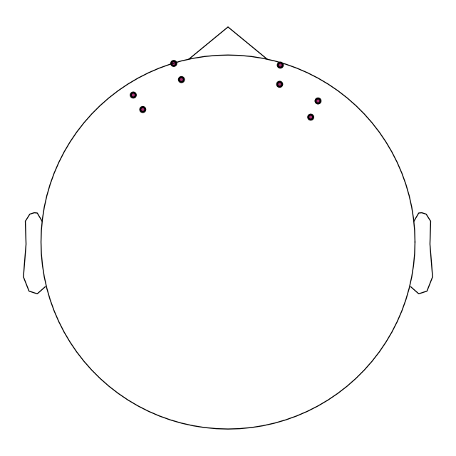
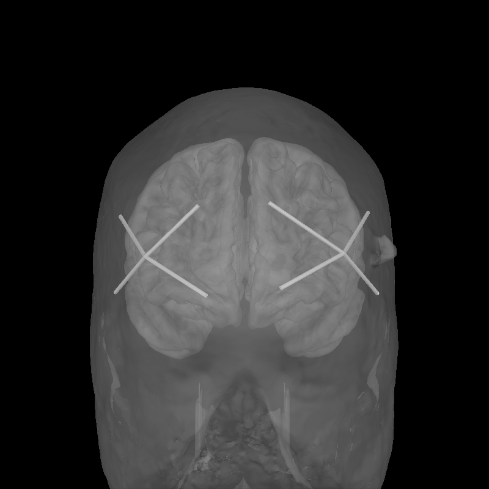

Note
Go to the end to download the full example code or to run this example in your browser via Binder.
Importing Data From fNIRS Devices#
Note
This tutorial is a mirror of the (MNE tutorial), and is reproduced in MNE-NIRS for convenience and so that all relevant material is easily accessible to users.
fNIRS devices consist of two kinds of optodes: light sources (AKA “emitters” or “transmitters”) and light detectors (AKA “receivers”). Channels are defined as source-detector pairs, and channel locations are defined as the midpoint between source and detector.
MNE-Python provides functions for reading fNIRS data and optode locations from several file formats. Regardless of the device manufacturer or file format, MNE-Python’s fNIRS functions will internally store the measurement data and its metadata in the same way (e.g., data values are always converted into SI units). Supported measurement types include amplitude, optical density, oxyhaemoglobin concentration, and deoxyhemoglobin concentration (for continuous wave fNIRS), and additionally AC amplitude and phase (for frequency domain fNIRS).
Warning
MNE-Python stores metadata internally with a specific structure, and internal functions expect specific naming conventions. Manual modification of channel names and metadata is not recommended.
Standardized data#
SNIRF (.snirf)#
The Shared Near Infrared Spectroscopy Format
(SNIRF)
is designed by the fNIRS community in an effort to facilitate
sharing and analysis of fNIRS data. And is the official format of the
Society for functional near-infrared spectroscopy (SfNIRS).
The manufacturers Gowerlabs, NIRx, Kernel, and Cortivision
export data in the SNIRF format, and these files can be imported in to MNE.
SNIRF is the preferred format for reading data in to MNE-Python.
Data stored in the SNIRF format can be read in
using mne.io.read_raw_snirf().
Note
The SNIRF format has provisions for many different types of fNIRS recordings. MNE-Python currently only supports reading continuous wave or haemoglobin data stored in the .snirf format.
Specifying the coordinate system#
There are a variety of coordinate systems used to specify the location of
sensors (see Source alignment and coordinate frames for details). Where possible the
coordinate system will be determined automatically when reading a SNIRF file.
However, sometimes this is not possible and you must manually specify the
coordinate frame the optodes are in. This is done using the optode_frame
argument when loading data.
Vendor |
Model |
|
|---|---|---|
NIRx |
ICBM-152 MNI |
mri |
Kernel |
ICBM 2009b |
mri |
The coordinate system is automatically detected for Gowerlabs SNIRF files.
Continuous Wave Devices#
NIRx (directory or hdr)#
NIRx produce continuous wave fNIRS devices.
NIRx recordings can be read in using mne.io.read_raw_nirx().
The NIRx device stores data directly to a directory with multiple file types,
MNE-Python extracts the appropriate information from each file.
MNE-Python only supports NIRx files recorded with NIRStar
version 15.0 and above and Aurora version 2021 and above.
MNE-Python supports reading data from NIRScout and NIRSport devices.
Hitachi (.csv)#
Hitachi produce continuous wave fNIRS devices.
Hitachi fNIRS recordings can be read using mne.io.read_raw_hitachi().
No optode information is stored so you’ll need to set the montage manually,
see the Notes section of mne.io.read_raw_hitachi().
Frequency Domain Devices#
BOXY (.txt)#
BOXY recordings can be read in using mne.io.read_raw_boxy().
The BOXY software and ISS Imagent I and II devices are frequency domain
systems that store data in a single .txt file containing what they call
(with MNE-Python’s name for that type of data in parens):
- DC
All light collected by the detector (
fnirs_cw_amplitude)
- AC
High-frequency modulated light intensity (
fnirs_fd_ac_amplitude)
- Phase
Phase of the modulated light (
fnirs_fd_phase)
DC data is stored as the type fnirs_cw_amplitude because it
collects both the modulated and any unmodulated light, and hence is analogous
to what is collected by continuous wave systems such as NIRx. This helps with
conformance to SNIRF standard types.
These raw data files can be saved by the acquisition devices as parsed or
unparsed .txt files, which affects how the data in the file is organised.
MNE-Python will read either file type and extract the raw DC, AC,
and Phase data. If triggers are sent using the digaux port of the
recording hardware, MNE-Python will also read the digaux data and
create annotations for any triggers.
Custom Data Import#
Loading legacy data in CSV or TSV format#
Warning
This method is not supported and users are discouraged to use it.
You should convert your data to the
SNIRF format using the tools
provided by the Society for functional Near-Infrared Spectroscopy,
and then load it using mne.io.read_raw_snirf().
fNIRS measurements may be stored in a non-standardised format that is not supported by MNE-Python and cannot be converted easily into SNIRF. This legacy data is often in CSV or TSV format, we show here a way to load it even though it is not officially supported by MNE-Python due to the lack of standardisation of the file format (the naming and ordering of channels, the type and scaling of data, and specification of sensor positions varies between each vendor). You will likely have to adapt this depending on the system from which your CSV originated.
import os.path as op
import mne
import numpy as np
import pandas as pd
# sphinx_gallery_thumbnail_number = 2
First, we generate an example CSV file which will then be loaded in to MNE-Python. This step would be skipped if you have actual data you wish to load. We simulate 16 channels with 100 samples of data and save this to a file called fnirs.csv.
pd.DataFrame(np.random.normal(size=(16, 100))).to_csv("fnirs.csv")
Next, we will load the example CSV file.
data = pd.read_csv("fnirs.csv")
Then, the metadata must be specified manually as the CSV file does not contain information about channel names, types, sample rate etc.
Warning
In MNE-Python the naming of channels MUST follow the structure
S#_D# type where # is replaced by the appropriate source and
detector numbers and type is either hbo, hbr or the
wavelength.
ch_names = [
"S1_D1 hbo",
"S1_D1 hbr",
"S2_D1 hbo",
"S2_D1 hbr",
"S3_D1 hbo",
"S3_D1 hbr",
"S4_D1 hbo",
"S4_D1 hbr",
"S5_D2 hbo",
"S5_D2 hbr",
"S6_D2 hbo",
"S6_D2 hbr",
"S7_D2 hbo",
"S7_D2 hbr",
"S8_D2 hbo",
"S8_D2 hbr",
]
ch_types = [
"hbo",
"hbr",
"hbo",
"hbr",
"hbo",
"hbr",
"hbo",
"hbr",
"hbo",
"hbr",
"hbo",
"hbr",
"hbo",
"hbr",
"hbo",
"hbr",
]
sfreq = 10.0 # in Hz
Finally, the data can be converted in to an MNE-Python data structure.
The metadata above is used to create an mne.Info data structure,
and this is combined with the data to create an MNE-Python
Raw object. For more details on the info structure
see The Info data structure, and for additional details on how continuous data
is stored in MNE-Python see The Raw data structure: continuous data.
For a more extensive description of how to create MNE-Python data structures
from raw array data see Creating MNE-Python data structures from scratch.
Creating RawArray with float64 data, n_channels=16, n_times=101
Range : 0 ... 100 = 0.000 ... 10.000 secs
Ready.
Applying standard sensor locations to imported data#
Having information about optode locations may assist in your analysis. Beyond the general benefits this provides (e.g. creating regions of interest, etc), this is may be particularly important for fNIRS as information about the optode locations is required to convert the optical density data in to an estimate of the haemoglobin concentrations. MNE-Python provides methods to load standard sensor configurations (montages) from some vendors, and this is demonstrated below. Some handy tutorials for understanding sensor locations, coordinate systems, and how to store and view this information in MNE-Python are: Working with sensor locations, Source alignment and coordinate frames, and Plotting EEG sensors on the scalp.
Below is an example of how to load the optode positions for an Artinis OctaMon device.
Note
It is also possible to create a custom montage from a file for
fNIRS with mne.channels.read_custom_montage() by setting
coord_frame to 'mri'.
montage = mne.channels.make_standard_montage("artinis-octamon")
raw.set_montage(montage)
# View the position of optodes in 2D to confirm the positions are correct.
raw.plot_sensors()

<Figure size 640x640 with 1 Axes>
To validate the positions were loaded correctly it is also possible to view the location of the sources (red), detectors (black), and channels (white lines and orange dots) in a 3D representation. The ficiduals are marked in blue, green and red. See Source alignment and coordinate frames for more details.
subjects_dir = op.join(mne.datasets.sample.data_path(), "subjects")
mne.datasets.fetch_fsaverage(subjects_dir=subjects_dir)
brain = mne.viz.Brain(
"fsaverage", subjects_dir=subjects_dir, alpha=0.5, cortex="low_contrast"
)
brain.add_head()
brain.add_sensors(raw.info, trans="fsaverage")
brain.show_view(azimuth=90, elevation=90, distance=500)

Using default location ~/mne_data for sample...
Fetching 1 file for the sample dataset ...
0%| | 0.00/1.65G [00:00<?, ?B/s]
0%| | 2.77M/1.65G [00:00<00:59, 27.7MB/s]
1%|▎ | 13.3M/1.65G [00:00<00:22, 73.3MB/s]
1%|▌ | 24.5M/1.65G [00:00<00:17, 91.1MB/s]
2%|▊ | 35.6M/1.65G [00:00<00:16, 99.0MB/s]
3%|█ | 46.9M/1.65G [00:00<00:15, 104MB/s]
4%|█▎ | 58.0M/1.65G [00:00<00:14, 106MB/s]
4%|█▌ | 69.1M/1.65G [00:00<00:14, 108MB/s]
5%|█▊ | 80.3M/1.65G [00:00<00:14, 109MB/s]
6%|██ | 91.4M/1.65G [00:00<00:14, 110MB/s]
6%|██▍ | 103M/1.65G [00:01<00:14, 110MB/s]
7%|██▋ | 114M/1.65G [00:01<00:14, 109MB/s]
8%|██▉ | 125M/1.65G [00:01<00:13, 110MB/s]
8%|███▏ | 136M/1.65G [00:01<00:13, 110MB/s]
9%|███▍ | 147M/1.65G [00:01<00:13, 111MB/s]
10%|███▋ | 158M/1.65G [00:01<00:13, 111MB/s]
10%|███▉ | 169M/1.65G [00:01<00:13, 111MB/s]
11%|████▎ | 181M/1.65G [00:01<00:13, 111MB/s]
12%|████▌ | 192M/1.65G [00:01<00:13, 112MB/s]
12%|████▊ | 203M/1.65G [00:01<00:12, 112MB/s]
13%|█████ | 214M/1.65G [00:02<00:12, 112MB/s]
14%|█████▎ | 226M/1.65G [00:02<00:12, 111MB/s]
14%|█████▌ | 237M/1.65G [00:02<00:13, 108MB/s]
15%|█████▊ | 247M/1.65G [00:02<00:13, 107MB/s]
16%|██████ | 259M/1.65G [00:02<00:12, 109MB/s]
16%|██████▎ | 270M/1.65G [00:02<00:12, 110MB/s]
17%|██████▋ | 281M/1.65G [00:02<00:12, 110MB/s]
18%|██████▉ | 292M/1.65G [00:02<00:12, 111MB/s]
18%|███████▏ | 304M/1.65G [00:02<00:12, 111MB/s]
19%|███████▍ | 315M/1.65G [00:02<00:11, 112MB/s]
20%|███████▋ | 326M/1.65G [00:03<00:11, 112MB/s]
20%|███████▉ | 337M/1.65G [00:03<00:11, 112MB/s]
21%|████████▏ | 349M/1.65G [00:03<00:11, 112MB/s]
22%|████████▍ | 360M/1.65G [00:03<00:11, 112MB/s]
22%|████████▊ | 371M/1.65G [00:03<00:11, 112MB/s]
23%|█████████ | 382M/1.65G [00:03<00:11, 113MB/s]
24%|█████████▎ | 394M/1.65G [00:03<00:11, 110MB/s]
24%|█████████▌ | 405M/1.65G [00:03<00:11, 107MB/s]
25%|█████████▊ | 415M/1.65G [00:03<00:12, 103MB/s]
26%|██████████ | 426M/1.65G [00:03<00:12, 101MB/s]
26%|██████████▎ | 437M/1.65G [00:04<00:11, 105MB/s]
27%|██████████▌ | 448M/1.65G [00:04<00:11, 107MB/s]
28%|██████████▊ | 460M/1.65G [00:04<00:10, 109MB/s]
29%|███████████ | 471M/1.65G [00:04<00:10, 110MB/s]
29%|███████████▍ | 482M/1.65G [00:04<00:10, 111MB/s]
30%|███████████▋ | 494M/1.65G [00:04<00:10, 112MB/s]
31%|███████████▉ | 505M/1.65G [00:04<00:10, 112MB/s]
31%|████████████▏ | 516M/1.65G [00:04<00:10, 112MB/s]
32%|████████████▍ | 528M/1.65G [00:04<00:09, 113MB/s]
33%|████████████▋ | 539M/1.65G [00:04<00:09, 113MB/s]
33%|████████████▉ | 550M/1.65G [00:05<00:09, 113MB/s]
34%|█████████████▎ | 562M/1.65G [00:05<00:10, 102MB/s]
35%|█████████████▏ | 572M/1.65G [00:05<00:10, 98.3MB/s]
35%|█████████████▊ | 583M/1.65G [00:05<00:10, 102MB/s]
36%|██████████████ | 595M/1.65G [00:05<00:10, 105MB/s]
37%|██████████████▎ | 606M/1.65G [00:05<00:09, 108MB/s]
37%|██████████████▌ | 617M/1.65G [00:05<00:09, 109MB/s]
38%|██████████████▊ | 628M/1.65G [00:05<00:09, 110MB/s]
39%|███████████████ | 640M/1.65G [00:05<00:09, 111MB/s]
39%|███████████████▎ | 651M/1.65G [00:06<00:08, 112MB/s]
40%|███████████████▋ | 662M/1.65G [00:06<00:08, 112MB/s]
41%|███████████████▉ | 674M/1.65G [00:06<00:08, 112MB/s]
41%|████████████████▏ | 685M/1.65G [00:06<00:08, 112MB/s]
42%|████████████████▍ | 696M/1.65G [00:06<00:08, 112MB/s]
43%|████████████████▋ | 707M/1.65G [00:06<00:08, 113MB/s]
43%|████████████████▉ | 719M/1.65G [00:06<00:08, 113MB/s]
44%|█████████████████▏ | 730M/1.65G [00:06<00:08, 112MB/s]
45%|█████████████████▍ | 741M/1.65G [00:06<00:08, 113MB/s]
46%|█████████████████▊ | 753M/1.65G [00:06<00:08, 110MB/s]
46%|██████████████████ | 764M/1.65G [00:07<00:08, 111MB/s]
47%|██████████████████▎ | 775M/1.65G [00:07<00:07, 111MB/s]
48%|██████████████████▌ | 787M/1.65G [00:07<00:07, 112MB/s]
48%|██████████████████▊ | 798M/1.65G [00:07<00:07, 112MB/s]
49%|███████████████████ | 809M/1.65G [00:07<00:07, 112MB/s]
50%|███████████████████▎ | 820M/1.65G [00:07<00:07, 112MB/s]
50%|███████████████████▌ | 832M/1.65G [00:07<00:07, 112MB/s]
51%|███████████████████▉ | 843M/1.65G [00:07<00:07, 112MB/s]
52%|████████████████████▏ | 854M/1.65G [00:07<00:07, 110MB/s]
52%|████████████████████▍ | 865M/1.65G [00:07<00:07, 104MB/s]
53%|████████████████████▋ | 876M/1.65G [00:08<00:07, 106MB/s]
54%|████████████████████▉ | 887M/1.65G [00:08<00:07, 108MB/s]
54%|█████████████████████▏ | 899M/1.65G [00:08<00:06, 110MB/s]
55%|█████████████████████▍ | 910M/1.65G [00:08<00:06, 110MB/s]
56%|█████████████████████▋ | 921M/1.65G [00:08<00:06, 111MB/s]
56%|██████████████████████ | 933M/1.65G [00:08<00:06, 112MB/s]
57%|██████████████████████▎ | 944M/1.65G [00:08<00:06, 112MB/s]
58%|██████████████████████▌ | 955M/1.65G [00:08<00:06, 112MB/s]
58%|██████████████████████▊ | 966M/1.65G [00:08<00:06, 109MB/s]
59%|███████████████████████ | 977M/1.65G [00:08<00:06, 110MB/s]
60%|███████████████████████▎ | 988M/1.65G [00:09<00:06, 111MB/s]
60%|██████████████████████▉ | 1.00G/1.65G [00:09<00:05, 111MB/s]
61%|███████████████████████▏ | 1.01G/1.65G [00:09<00:05, 112MB/s]
62%|███████████████████████▌ | 1.02G/1.65G [00:09<00:05, 111MB/s]
63%|███████████████████████▊ | 1.03G/1.65G [00:09<00:05, 108MB/s]
63%|████████████████████████ | 1.04G/1.65G [00:09<00:05, 108MB/s]
64%|████████████████████████▎ | 1.05G/1.65G [00:09<00:05, 106MB/s]
65%|████████████████████████▌ | 1.07G/1.65G [00:09<00:05, 108MB/s]
65%|████████████████████████▊ | 1.08G/1.65G [00:09<00:05, 110MB/s]
66%|█████████████████████████ | 1.09G/1.65G [00:09<00:05, 110MB/s]
67%|█████████████████████████▎ | 1.10G/1.65G [00:10<00:05, 110MB/s]
67%|█████████████████████████▌ | 1.11G/1.65G [00:10<00:04, 111MB/s]
68%|█████████████████████████▊ | 1.12G/1.65G [00:10<00:04, 111MB/s]
69%|██████████████████████████ | 1.13G/1.65G [00:10<00:04, 111MB/s]
69%|██████████████████████████▎ | 1.14G/1.65G [00:10<00:04, 111MB/s]
70%|██████████████████████████▌ | 1.16G/1.65G [00:10<00:04, 110MB/s]
71%|██████████████████████████▊ | 1.17G/1.65G [00:10<00:04, 108MB/s]
71%|███████████████████████████ | 1.18G/1.65G [00:10<00:04, 109MB/s]
72%|███████████████████████████▎ | 1.19G/1.65G [00:10<00:04, 110MB/s]
73%|███████████████████████████▌ | 1.20G/1.65G [00:10<00:04, 110MB/s]
73%|███████████████████████████▊ | 1.21G/1.65G [00:11<00:04, 110MB/s]
74%|████████████████████████████ | 1.22G/1.65G [00:11<00:04, 106MB/s]
75%|████████████████████████████▎ | 1.23G/1.65G [00:11<00:04, 104MB/s]
75%|████████████████████████████▌ | 1.24G/1.65G [00:11<00:03, 106MB/s]
76%|████████████████████████████▊ | 1.25G/1.65G [00:11<00:03, 106MB/s]
76%|█████████████████████████████ | 1.26G/1.65G [00:11<00:03, 106MB/s]
77%|█████████████████████████████▎ | 1.28G/1.65G [00:11<00:03, 107MB/s]
78%|█████████████████████████████▌ | 1.29G/1.65G [00:11<00:03, 108MB/s]
78%|█████████████████████████████▊ | 1.30G/1.65G [00:11<00:03, 108MB/s]
79%|██████████████████████████████ | 1.31G/1.65G [00:11<00:03, 109MB/s]
80%|██████████████████████████████▎ | 1.32G/1.65G [00:12<00:03, 109MB/s]
80%|██████████████████████████████▌ | 1.33G/1.65G [00:12<00:02, 109MB/s]
81%|██████████████████████████████▊ | 1.34G/1.65G [00:12<00:02, 107MB/s]
82%|███████████████████████████████ | 1.35G/1.65G [00:12<00:02, 108MB/s]
82%|███████████████████████████████▎ | 1.36G/1.65G [00:12<00:02, 109MB/s]
83%|███████████████████████████████▌ | 1.37G/1.65G [00:12<00:02, 109MB/s]
84%|███████████████████████████████▊ | 1.39G/1.65G [00:12<00:02, 109MB/s]
84%|████████████████████████████████ | 1.40G/1.65G [00:12<00:02, 110MB/s]
85%|████████████████████████████████▎ | 1.41G/1.65G [00:12<00:02, 107MB/s]
86%|████████████████████████████████▌ | 1.42G/1.65G [00:13<00:02, 102MB/s]
86%|███████████████████████████████▉ | 1.43G/1.65G [00:13<00:02, 94.6MB/s]
87%|████████████████████████████████▏ | 1.44G/1.65G [00:13<00:02, 99.0MB/s]
88%|█████████████████████████████████▎ | 1.45G/1.65G [00:13<00:01, 102MB/s]
88%|█████████████████████████████████▌ | 1.46G/1.65G [00:13<00:01, 105MB/s]
89%|█████████████████████████████████▊ | 1.47G/1.65G [00:13<00:01, 106MB/s]
90%|██████████████████████████████████ | 1.48G/1.65G [00:13<00:01, 108MB/s]
90%|██████████████████████████████████▎ | 1.49G/1.65G [00:13<00:01, 109MB/s]
91%|██████████████████████████████████▌ | 1.51G/1.65G [00:13<00:01, 109MB/s]
92%|██████████████████████████████████▊ | 1.52G/1.65G [00:13<00:01, 107MB/s]
92%|███████████████████████████████████ | 1.53G/1.65G [00:14<00:01, 108MB/s]
93%|███████████████████████████████████▍ | 1.54G/1.65G [00:14<00:01, 109MB/s]
94%|███████████████████████████████████▋ | 1.55G/1.65G [00:14<00:00, 110MB/s]
94%|███████████████████████████████████▉ | 1.56G/1.65G [00:14<00:00, 110MB/s]
95%|████████████████████████████████████▏ | 1.57G/1.65G [00:14<00:00, 110MB/s]
96%|████████████████████████████████████▍ | 1.58G/1.65G [00:14<00:00, 111MB/s]
96%|████████████████████████████████████▋ | 1.59G/1.65G [00:14<00:00, 111MB/s]
97%|████████████████████████████████████▉ | 1.61G/1.65G [00:14<00:00, 104MB/s]
98%|█████████████████████████████████████▏| 1.62G/1.65G [00:14<00:00, 101MB/s]
98%|█████████████████████████████████████▍| 1.63G/1.65G [00:14<00:00, 104MB/s]
99%|█████████████████████████████████████▋| 1.64G/1.65G [00:15<00:00, 106MB/s]
100%|█████████████████████████████████████▉| 1.65G/1.65G [00:15<00:00, 107MB/s]
0%| | 0.00/1.65G [00:00<?, ?B/s]
100%|█████████████████████████████████████| 1.65G/1.65G [00:00<00:00, 6.07TB/s]
Download complete in 44s (1576.2 MB)
16 files missing from root.txt in /home/circleci/mne_data/MNE-sample-data/subjects
Downloading missing files remotely
0%| | 0.00/196M [00:00<?, ?B/s]
0%| | 212k/196M [00:00<01:33, 2.08MB/s]
4%|█▌ | 7.96M/196M [00:00<00:04, 46.1MB/s]
10%|███▋ | 19.3M/196M [00:00<00:02, 76.6MB/s]
16%|█████▉ | 30.5M/196M [00:00<00:01, 90.6MB/s]
21%|████████ | 41.2M/196M [00:00<00:01, 96.6MB/s]
26%|█████████▉ | 51.3M/196M [00:00<00:01, 98.1MB/s]
31%|███████████▊ | 61.1M/196M [00:00<00:01, 97.3MB/s]
36%|█████████████▊ | 70.9M/196M [00:00<00:01, 97.2MB/s]
42%|████████████████▎ | 82.1M/196M [00:00<00:01, 102MB/s]
48%|██████████████████▌ | 93.4M/196M [00:01<00:00, 105MB/s]
53%|█████████████████████▎ | 105M/196M [00:01<00:00, 107MB/s]
59%|███████████████████████▋ | 116M/196M [00:01<00:00, 109MB/s]
65%|█████████████████████████▉ | 127M/196M [00:01<00:00, 110MB/s]
71%|████████████████████████████▎ | 138M/196M [00:01<00:00, 102MB/s]
76%|██████████████████████████████▌ | 150M/196M [00:01<00:00, 105MB/s]
82%|████████████████████████████████▉ | 161M/196M [00:01<00:00, 108MB/s]
88%|███████████████████████████████████▏ | 172M/196M [00:01<00:00, 110MB/s]
94%|█████████████████████████████████████▍ | 184M/196M [00:01<00:00, 102MB/s]
100%|███████████████████████████████████████▊| 195M/196M [00:01<00:00, 105MB/s]
0%| | 0.00/196M [00:00<?, ?B/s]
100%|████████████████████████████████████████| 196M/196M [00:00<00:00, 889GB/s]
Extracting missing files
Successfully extracted 16 files
10 files missing from bem.txt in /home/circleci/mne_data/MNE-sample-data/subjects/fsaverage
Downloading missing files remotely
0%| | 0.00/239M [00:00<?, ?B/s]
1%|▍ | 2.53M/239M [00:00<00:09, 25.3MB/s]
4%|█▍ | 8.70M/239M [00:00<00:04, 46.7MB/s]
8%|███▏ | 20.0M/239M [00:00<00:02, 76.9MB/s]
13%|████▉ | 31.3M/239M [00:00<00:02, 91.2MB/s]
18%|██████▊ | 42.6M/239M [00:00<00:01, 99.0MB/s]
23%|████████▊ | 53.9M/239M [00:00<00:01, 104MB/s]
27%|██████████▋ | 65.2M/239M [00:00<00:01, 107MB/s]
32%|████████████▍ | 75.9M/239M [00:00<00:01, 104MB/s]
37%|██████████████▏ | 87.2M/239M [00:00<00:01, 107MB/s]
41%|████████████████ | 98.5M/239M [00:01<00:01, 109MB/s]
46%|██████████████████▍ | 110M/239M [00:01<00:01, 110MB/s]
51%|████████████████████▎ | 121M/239M [00:01<00:01, 111MB/s]
55%|██████████████████████▏ | 132M/239M [00:01<00:00, 112MB/s]
60%|███████████████████████▍ | 144M/239M [00:01<00:01, 76.3MB/s]
65%|█████████████████████████▎ | 155M/239M [00:01<00:00, 84.6MB/s]
70%|███████████████████████████ | 166M/239M [00:01<00:00, 91.3MB/s]
74%|████████████████████████████▉ | 177M/239M [00:01<00:00, 96.7MB/s]
79%|███████████████████████████████▌ | 189M/239M [00:01<00:00, 101MB/s]
84%|█████████████████████████████████▍ | 200M/239M [00:02<00:00, 105MB/s]
89%|███████████████████████████████████▍ | 212M/239M [00:02<00:00, 108MB/s]
93%|█████████████████████████████████████▎ | 223M/239M [00:02<00:00, 109MB/s]
98%|███████████████████████████████████████▏| 234M/239M [00:02<00:00, 110MB/s]
0%| | 0.00/239M [00:00<?, ?B/s]
100%|███████████████████████████████████████| 239M/239M [00:00<00:00, 1.00TB/s]
Extracting missing files
Successfully extracted 10 files
Using fsaverage-head-dense.fif for head surface.
1 BEM surfaces found
Reading a surface...
[done]
1 BEM surfaces read
Channel types:: hbo: 8, hbr: 8
Total running time of the script: (1 minutes 4.705 seconds)
Estimated memory usage: 1093 MB